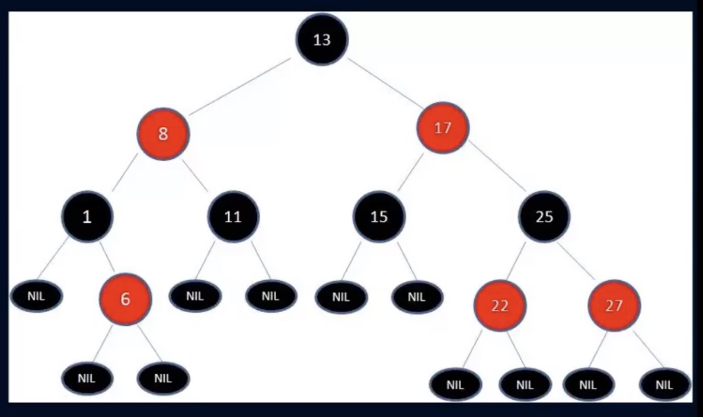
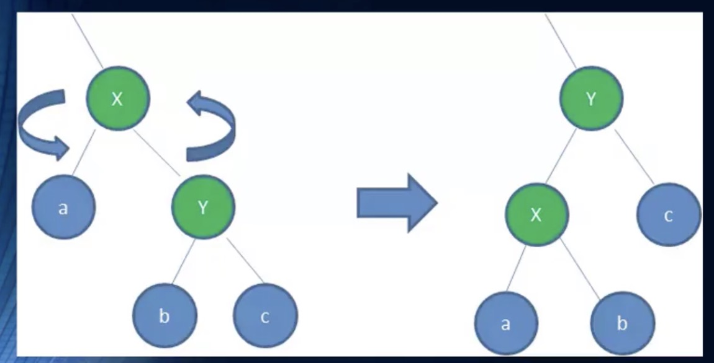
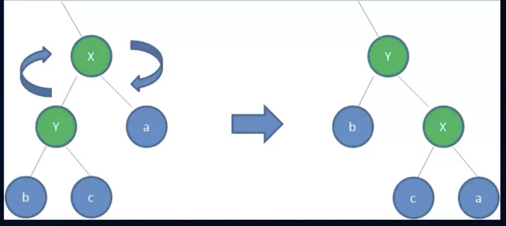
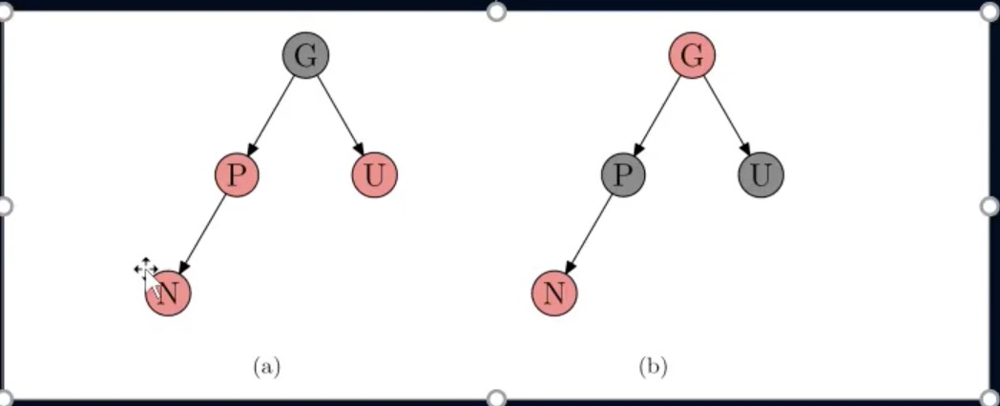

一、邂逅红黑树
首先红黑树很难，难到什么程度呢？
基本你跟别人聊数据结构的时候，他不会和你聊红黑树，因为他是数据结构中的一个
难点中的难点
数据结构的学习本来就比较难了，红黑树是又将难度
上升一个档次
的知识点
哪些面试会出现红黑树呢？
通常在比较知名的互联网公司面试时会出现红黑树的题目
因为它可以作为你对数据结构掌握深度的很好考察点
但是在除去大型互联网公司外，几乎不会考察到红黑树
应为面试官很有可能自己都不懂
二、红黑树的规则
红黑树，除了符合二叉搜索树的基本规则外，还添加了以下特性：
1、节点是红色或者黑色
2、根结点是黑色
3、每个叶子节点都是黑色的空节点(nil节点)
4、每个红色节点的两个子节点都是黑色的。（从每个叶子到根的所有路径上不能有两个连续的红色节点）
5、从任一节点到其每个叶子的所有路径都包含相同数目的黑色节点

三、红黑树的相对平衡
前面的约束，确保了红黑树的关键特性：
从根到叶子的最长可能路径，不会超过最短可能路径的两倍长
结果就是这个树
基本
是平衡的
虽然没有做到绝对的平衡，但是可以保证正在最坏的情况下，依然是高效的
为什么可以做到
最长路径不超过最短路径的两倍
呢？
性质4
决定了路径不能有两个相连的红色节点
最短的可能路径都是黑色节点
最长的可能路径是红色和黑色交替
性质5
所有路径都有相同数目的黑色节点
这就表明了没有路径能多于任何其他路径的两倍长
四、变色
插入一个新节点时，有可能树不再平衡，可以通过三种方式的变换，让树保持平衡
换色-左旋转-右旋转
变色：
为了重新符合红黑树的规则，尝试把
红色节点
变成
黑色
，或者把黑色节点变成红色
首先，需要知道插入的
新的节点
通常都是
红色节点
因为在插入节点为红色的时候，有可能插入一次是不违反红黑树任何规则的
而插入黑色节点，必然会导致有一条路径上多了黑色节点，这是很难调整的
红色节可能导致出现红红相连的情况，但是这种情况下可以通过颜色调换和旋转来调整
五、旋转
左旋转
逆时针旋转红黑树的两个节点，使得父节点被自己的右孩子取代，而自己成为自己的左孩子
图中，身为右孩子的Y取代了X的位置，而X变为Y的左孩子
问题：如果他们有子树是否会影响旋转

右旋转
顺时针旋转红黑树的两个节点，使得父节点被自己的左孩子取代，而自己成为做着自己的右孩子
图中，身为左孩子的Y取代了X的位置，而X变为Y的右孩子
问题：如果他们有子树是否会影响旋转

六、插入操作
接下来，讨论一下插入的情况
设要插入的节点为N，其父节点为P
其祖父节点为G，其父亲的兄弟节点为U(即P和U是同一节点的子节点)
情况一：
新节点N位于树的根，没有父节点
这种情况下，我们直接将红色变为黑色即可，这样满足特性2
情况二：
新节点的父节点P是黑色
性质4没有失效（新节点是红色），性质5也没任何问题
尽管新节点N有两个黑色的叶子节点nil，但是新节点N是红色的，所以通过它的路径中黑色节点的个数依然相同，满足性质5
情况三：
P为红色，U也是红色
操作方案：
将P和U边换为黑色，并且将G变换为红色
现在新节点N有了一个黑色的父节点P，所以每条路径上黑色节点的数目没有改变
而从更高的路径上，必然都会经过G节点，所以那些路径的黑色节点数目也是不变的，符合性质5
可能出现的问题：
但是，N的祖父节点G的父节点的父节点可能是红色，这就违反了性质4，可以递归调整颜色
但是如果递归调整颜色到了根结点，就需要进行旋转了，待会儿我们的例子中会遇到这个问题
